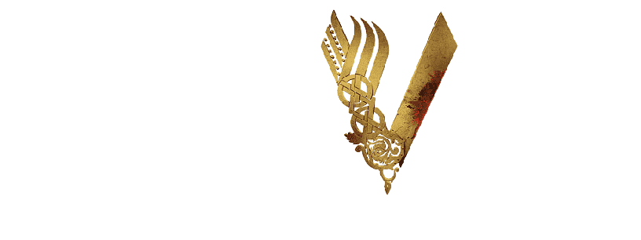

Vikings é uma série de televisão histórica que segue as aventuras e conquistas dos guerreiros vikings liderados por Ragnar Lothbrok, um lendário herói nórdico. A série se desenrola em um cenário de guerras, explorações e intrigas políticas na Escandinávia e além. Aqui está um resumo das principais características e eventos da série: 
Ragnar Lothbrok:
A história começa com Ragnar, um fazendeiro e guerreiro viking que se destaca por sua visão audaciosa e ambição de explorar terras além do horizonte conhecido.

Personagens Memoráveis:
Além de Ragnar, a série apresenta uma série de personagens notáveis, como Lagertha (a esposa de Ragnar e guerreira em sua própria direita), Rollo (o irmão de Ragnar, cuja lealdade é frequentemente questionada), Floki (um inventor e amigo íntimo de Ragnar) e outros guerreiros e líderes influentes.


Invasões e Batalhas Épicas:
A série apresenta batalhas emocionantes e bem coreografadas, destacando a habilidade e brutalidade dos guerreiros vikings, bem como as táticas de combate da época.

Dinastias e Herdeiros:
Ao longo das temporadas, a narrativa se concentra nas gerações futuras da família de Ragnar, com seus filhos (como Bjorn, Ivar, Ubbe, entre outros) desempenhando papéis proeminentes na continuação da saga.

"Vikings" é conhecida por sua narrativa envolvente, cenas de ação empolgantes e representações detalhadas da cultura viking. A série oferece um olhar intrigante sobre a vida e as conquistas dos guerreiros nórdicos, misturando eventos históricos com elementos de ficção para criar uma trama envolvente.


Henrique, OTAVIO.